INVERSE KINEMATICS OF A 6R ROBOT
Mechanisms are used in variety of fixed motion generation applications in Engineering, where as Robots are used in applications where programmable motion is required. This Laboratory provides a basic exposure to design and control of such motion control applications in various applications. Ranging from 2D planar mechanisms to that of spatial mechanism design a set of experiments are offered concerning position, velocity and acceleration synthesis and analysis for basic motions. In addition some basic mechatronic control methods using a common Lab PC and USB interface to control motion generating devices like stepper motor and servo motor are offered. These are further augmented with real robot control as applied in fixed base manipulators to that of moving base robots.
To show how a motion path in a 6-D space that can be generated by an open chain mechanism or robot using 6 inputs. The motion of the end-effector (or the tool) of the robot can be mapped to that of the inputs given. User learns the various aspects of motions generated in such mechanism or robot through a series of visual simulations that can be carried out by varying its basic parameters. The student can also control a robot live in this mode through a special live control option.
In vector calculus the Jacobian matrix is the matrix of all first-order partial derivatives of a vector- or scalar-valued function with respect to another vector.
The Jacobian of a function describes the orientation of a tangent plane to the function at a given point. In this way, the Jacobian generalizes the gradient of a scalar valued function of multiple variables which itself generalizes the derivative of a scalar-valued function of a scalar. Likewise, the Jacobian can also be thought of as describing the amount of "stretching" that a transformation imposes. For example, if (x2,y2= f(x>1,y1) is used to transform an image, the Jacobian of f,J(x1,y1) describes how much the image in the neighborhood of (x1,y1) is stretched in the x and y directions.
INVERSE
KINEMATICS
Which corresponds to 0T4 position
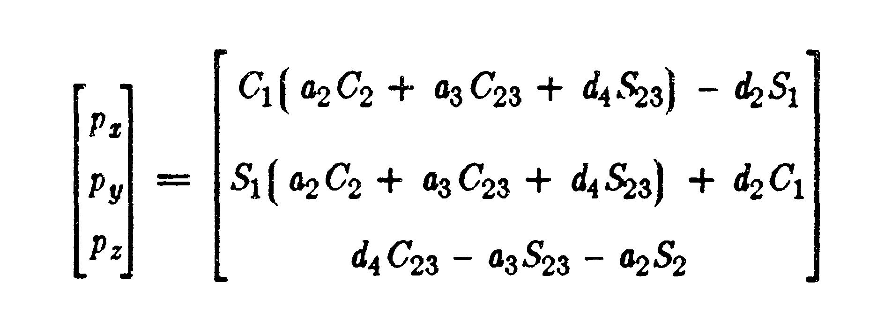
SOLUTION OF JOINT1
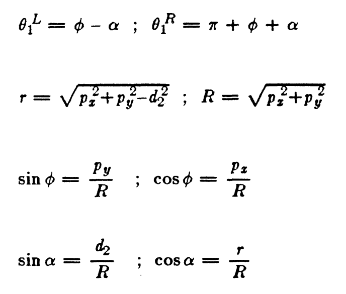
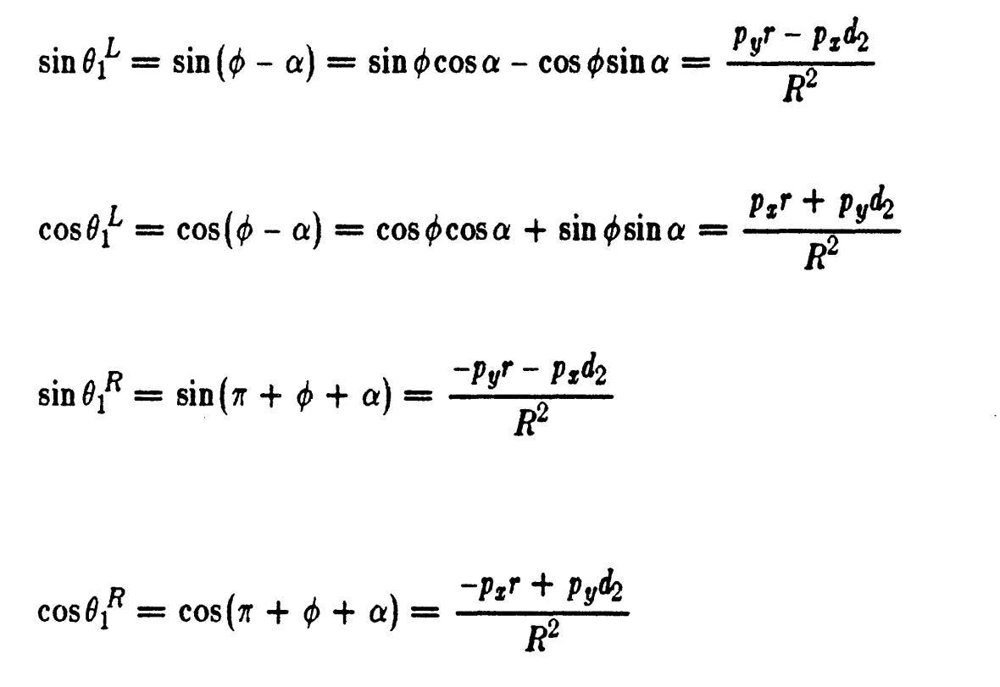
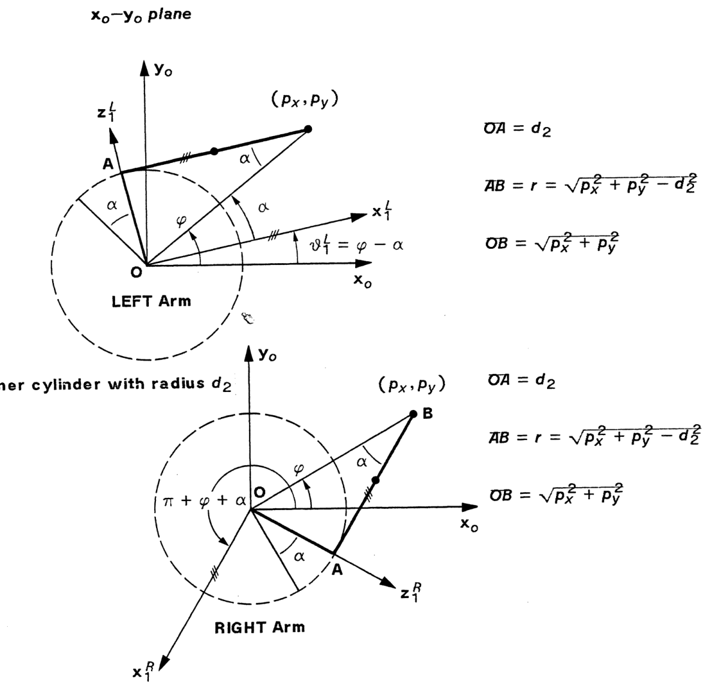
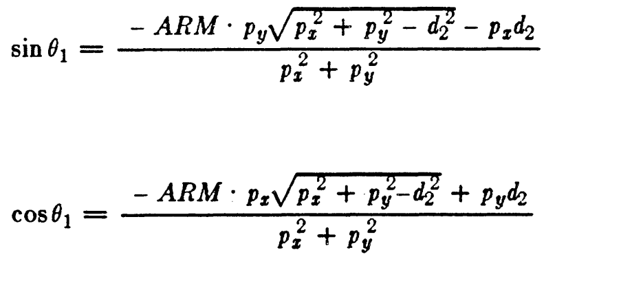
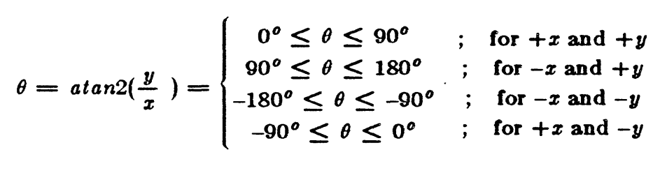
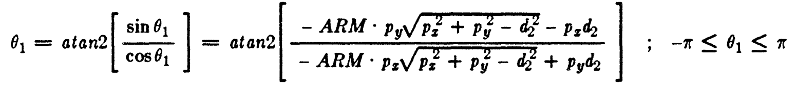
JOINT 2 SOLUTION
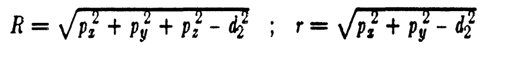
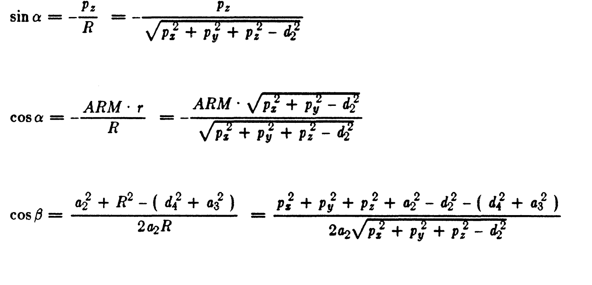

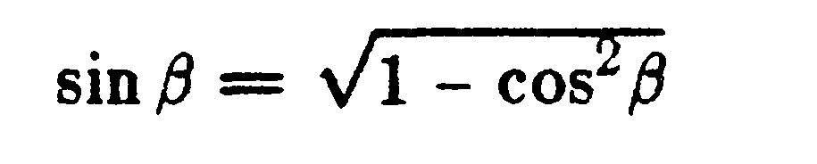
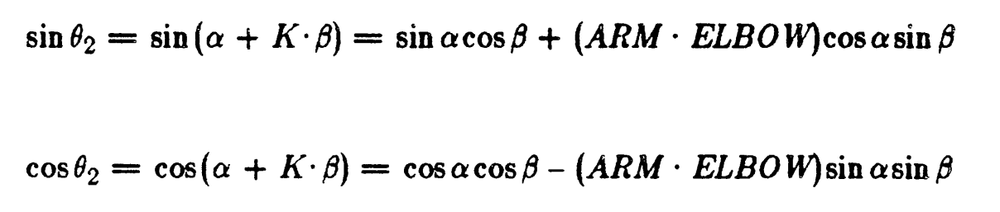
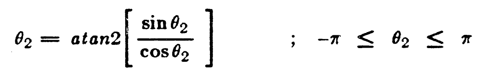
JOINT3 SOLUTION
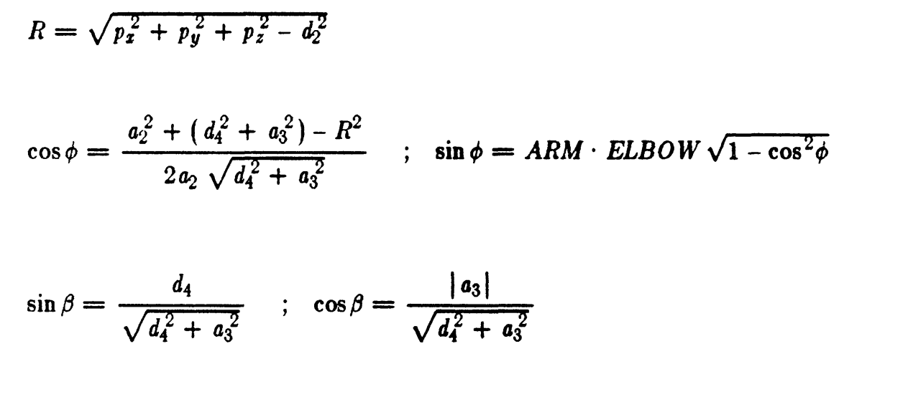

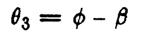
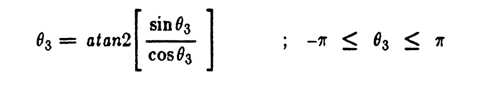
JOINT4 SOLUTION

JOINT5 SOLUTION:
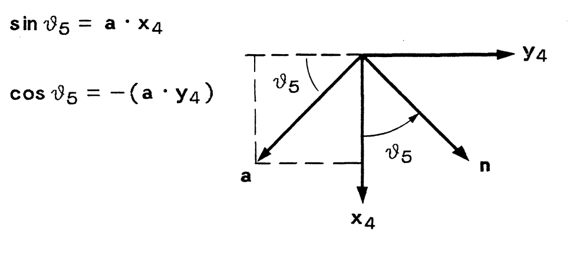

JACOBIAN
Jacobian for PUMA 560
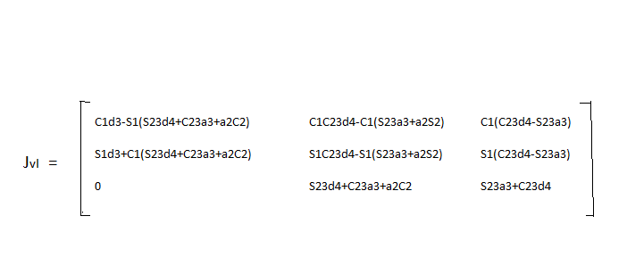
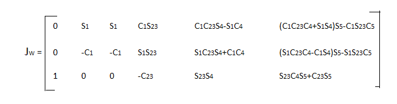
The forward kinematics equation indicates that the position element are determined by the first three joint variables.
Text book on Robot dynamics and control: By Mark W. Spong and M.Vidyasagar
Geometric approach in solving Inverse Kinematics PUMA Robots: By C.S.G Lee and M.Ziegler